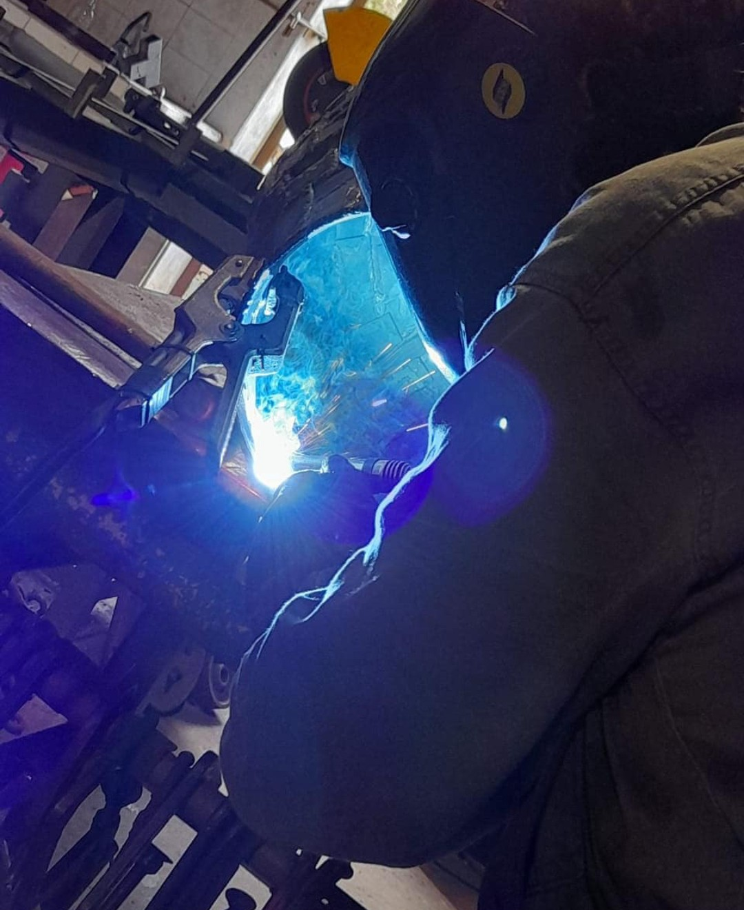
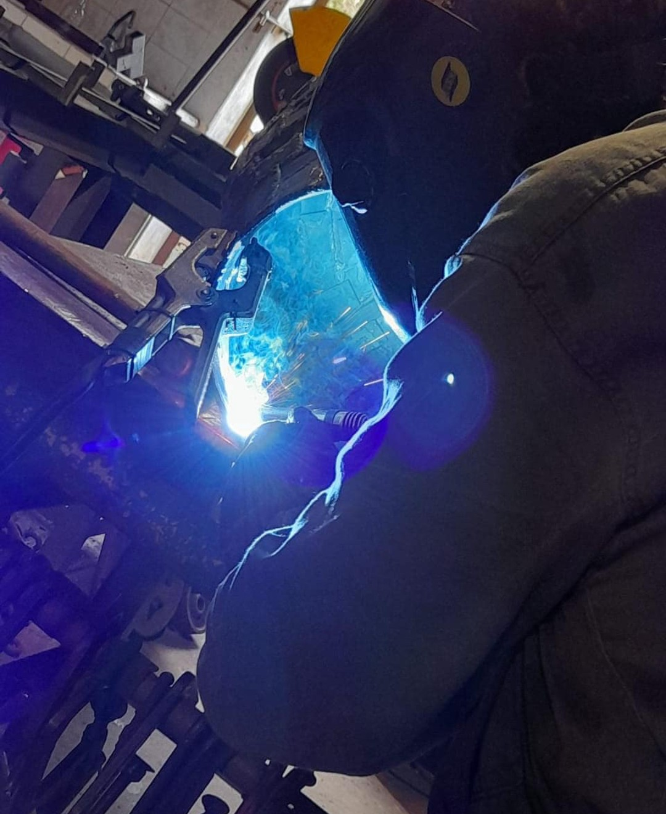

Jose was born in Zarate in 1970. From a very young age he liked art. He liked to buy art books and spent hours reading. They also had good creative skills, He liked to go to their father's workshop and create small sculptures with what they found there. His beginnings in welding were precisely in his father's workshop. With the help of his father, he turned on the welding machine and assembled small iron toys. Years later, he studied architecture and graphic design at the University of Buenos Aires, a very prestigious university in Argentina. In those years, he continued his interest in art. Then, he took a welding course in the city of Campana and from that moment on he began working in his welding workshop where he currently has a blacksmith shop. There, he does blacksmith work and also makes iron sculptures.
 
